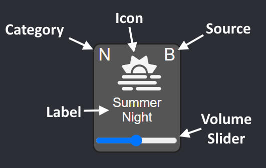

A sleepytime soundscape editor Written by Brendan Rood How-To (click to expand)Sweet Dreams provides the user with the ability to design a custom soundscape though mixing and matching various tiles.
Click anywhere on a tile to toggle playback. Click and drag on the slider to adjust volume.
Each tile consists of 5 elements.
An icon representing the sound.
The sound's label.
A volume slider for adjusting that specific sound's volume.
A category tag.
A source tag.

Tiles initially appear in their OFF state (dark grey).
Upon activation, tiles will enter their ON state (light grey).
During activation, tiles may briefly enter a LOADING state (purple).